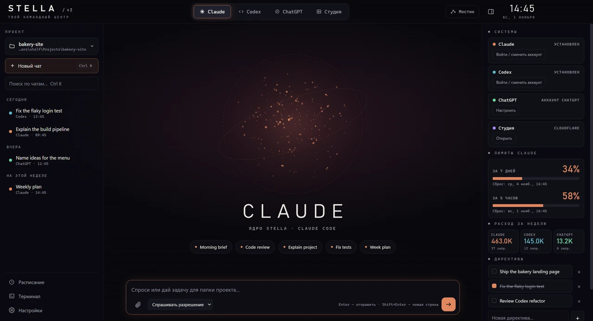
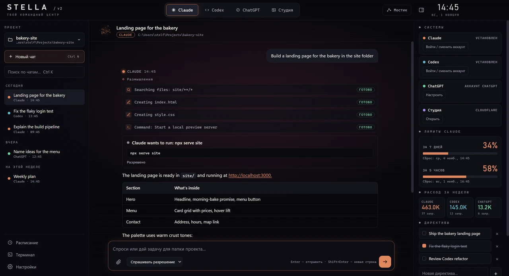
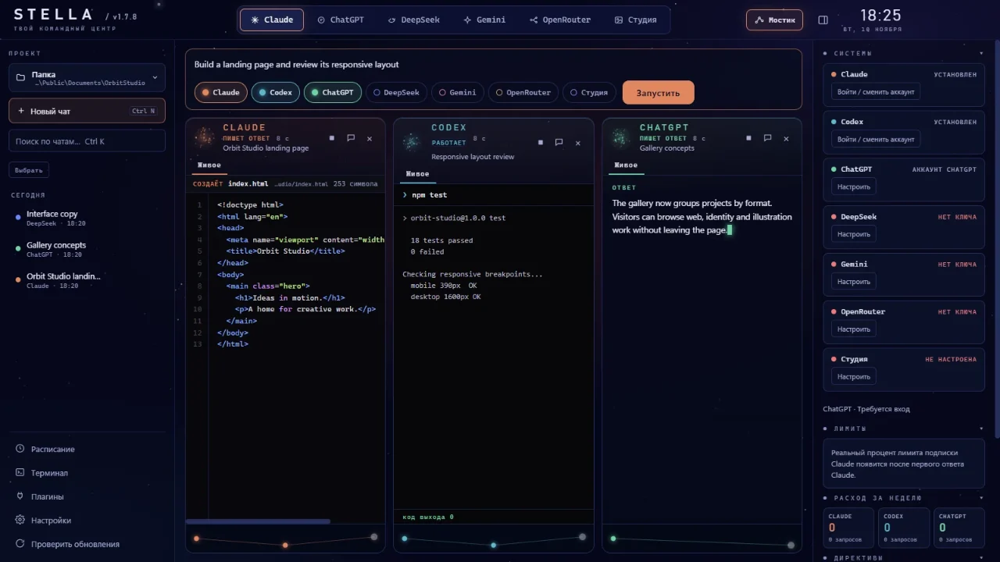
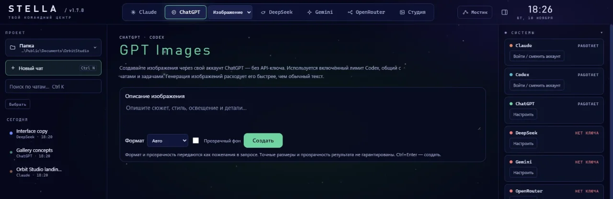

GPT Images
Create images with your signed-in ChatGPT/Codex account. Choose an aspect ratio or transparent background, then save from a local gallery.
Uses your Codex allowanceYour AI workspace · Windows
Work with Claude, Codex, ChatGPT, DeepSeek, Gemini and OpenRouter in one desktop app. Keep the conversation, code and images close to your project.
Free and open source · Windows 10/11 x64 · MIT
Your workspace
Move between agents without losing the work around them. Chats, projects, limits and tools stay in reach.

Find, resume, pin and export local conversations. Work in the folder you choose.
Review commands and file changes, set access levels, and answer agent questions in chat.
Hand a conversation to another agent when you need a different approach.

Bridge · Ctrl+B
Give one task to several agents. Bridge shows code appearing, edits replaying, commands streaming and HTML previews updating in separate lanes.

More ways to work
Stella brings the daily tools around your agents into the same window.
Create images with your signed-in ChatGPT/Codex account. Choose an aspect ratio or transparent background, then save from a local gallery.
Uses your Codex allowanceGenerate images with FLUX through Cloudflare Workers AI and keep them in a gallery.
Use the built-in terminal, schedule tasks, attach files, and open Stella from the tray or global hotkey.
See Claude subscription limits and agent token usage in your workspace.

Get started
Install Stella, then connect the AI tools and accounts you want to use in Systems. Stella does not bundle or resell proprietary agents.
Made to be yours
Chats, settings and generated images stay on your computer. Stella has no telemetry or analytics. Content goes to the AI service you choose when you use it.